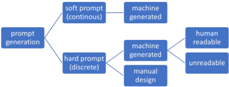
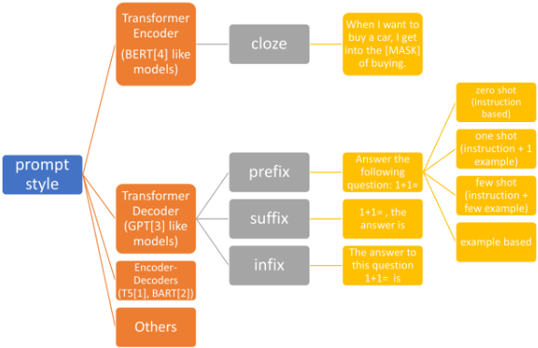

面向 In-context Learning 的 Zero-shot 提示设计实用综述
这篇综述系统梳理了 in-context learning 中的提示设计方法，按提示形式（discrete/continuous）与学习设定（zero/few-shot）建立分类框架，并聚焦 GPT 类 decoder-only 模型上的 zero-shot discrete prompt（任务指令）。论文先给出提示优化的形式化定义——固定模型参数、寻找最大化任务得分的提示 P*，随后依次综述 BERT 时代的 cloze 式提示、soft prompt（Prefix-Tuning、P-Tuning）、few-shot 示例选择，以及 zero-shot 提示的两条设计路线：手工设计（角色扮演与 MetaPrompts、Mishra 等人的五条设计原则、CoT 与 zero-shot CoT）和自动优化（APE、GRIPS、FluentPrompt、RLPROMPT）。关键结论：精心设计的 zero-shot 提示可以胜过 few-shot 提示；提示评估没有唯一'最佳'，需结合执行准确率、条件概率、可迁移性及幻觉/毒性等多维指标。对团队而言，这是一份提示工程方法论的基础地图，可直接支撑提示词设计规范与评估流程建设。
如何为 in-context learning 设计有效的提示以最大化 LLM 在下游任务上的表现，尤其是适用于 GPT 类 decoder-only 模型的 zero-shot discrete prompt（任务指令）的设计；同时解决提示性能评估的难题——由于不存在提示生成的 ground truth，没有单一'最佳'提示，需要多维评估指标。
综述型工作：先给出提示优化的形式化定义（固定 LLM 参数 θ，寻找最大化评分函数 S 的最优提示 P*），并按提示形式（discrete/continuous）与学习设定（zero/one/few-shot）建立分类框架。随后分线索梳理：(1) encoder-only 模型（BERT）的 cloze 式提示与多提示输出集成；(2) continuous/soft prompt（Prefix-Tuning、P-Tuning V1/V2）；(3) few-shot 示例选择与排序（基于 RoBERTa 嵌入相似度）；(4) 重点综述 zero-shot discrete prompt 的两条路线——手工设计（task specification by memetic proxy、MetaPrompts、Mishra 等人的五条原则、CoT 与 zero-shot CoT）与自动优化（APE 的 LLM 生成+Monte Carlo 搜索、GRIPS 的无梯度编辑式搜索、FluentPrompt 与 RLPROMPT 的梯度/强化学习方法）；最后总结提示评估的四类指标：条件概率（likelihood）、执行准确率、提示可迁移性与通用语言模型指标（幻觉、毒性、HELM）。
未在论文中说明（本文为综述，未报告自身量化实验；引用工作的结论均为定性描述，如精心设计的 zero-shot 提示可胜过 few-shot 提示、zero-shot CoT 显著提升数学推理表现、Prefix-Tuning 在小数据下接近全量微调性能等）
作为综述，其贡献不在提出新方法，而在于：(1) 给出统一的提示设计形式化定义与'提示形式×学习设定'分类框架；(2) 将手工设计原则、自动优化算法与评估方法整合在同一体系下，并明确聚焦实践中最常用的 zero-shot discrete prompt（任务指令）设定；(3) 强调提示评估的多维性——没有单一'最佳'提示，需结合任务执行准确率与幻觉、毒性等附加维度（如 HELM）。
相关度级别：high
命中能力域：3.2 提示工程 | 3.5 评测与可靠使用
理由：直接命中 3.2 提示工程域的核心技术：论文系统覆盖提示技术分类、手工设计原则（含 CoT/zero-shot CoT 推理提示）、自动提示优化（APE、GRIPS、FluentPrompt、RLPROMPT）与 in-context learning，正是团队'提示的设计与优化'能力域的方法论地图；其 4.3 节对提示评估的讨论（执行准确率、条件概率、可迁移性、幻觉/毒性等多维指标）与 3.5 评测与可靠使用域的'LLM 应用评测方法'直接相关。对不训练模型、专注'把模型用好'的团队，这是建立提示词设计规范与评估流程的基础参考。
建议动作：深入精读并做内部分享
arXiv:2309.13205v1 [cs.CL] 2023年9月22日
上下文学习（in-context learning）零样本提示设计的实用性综述
Yinheng Li
哥伦比亚大学 / 纽约市 li.yinheng@columbia.edu
大语言模型（LLMs）的显著进步为自然语言处理（NLP）任务带来了重大改进。本文对上下文学习（in-context learning）技术进行了全面综述，重点关注不同类型的提示，包括离散提示、连续提示、少样本（few-shot）提示和零样本（zero-shot）提示，及其对 LLM 性能的影响。我们探讨了多种提示设计方法，例如人工设计、优化算法和评估方法，以在不同任务中优化 LLM 的性能。我们的综述涵盖了提示工程领域的关键研究，讨论了这些研究的方法论及其对该领域的贡献。我们还深入探讨了评估提示性能所面临的挑战，因为并不存在单一的“最佳”提示，且考虑多种指标十分重要。最后，本文强调了提示设计在充分发挥 LLM 潜力方面的关键作用，并就如何将人工设计、优化技术与严格评估相结合，以在各种 NLP 任务中更有效、更高效地使用 LLM 提供了见解。
近年来，基于 Transformer 的语言模型（如 (Raffel et al., 2019)、(Lewis et al., 2019)、(Brown et al., 2020)、(Devlin et al., 2018)）已成为人工智能领域的一股变革性力量，彻底改变了自然语言理解（NLU）与自然语言生成（NLG）。随着模型规模和训练数据的不断发展，GPT 系列依托一种被称为上下文学习（in-context learning）的范式，在广泛的自然语言任务中展现出了非凡的能力。根据 (Brown et al., 2020) 的研究，上下文学习利用输入数据所提供的上下文来生成恰当的响应或预测，这与需要在标注数据集上进行显式任务特定训练和微调的传统方法形成鲜明对比。上下文学习使大语言模型能够充分利用海量数据，并以灵活、动态的方式适应各种任务。上下文学习有若干类别，包括零样本（zero-shot）、单样本（one-shot）和少样本（few-shot）学习。在所有类型的上下文学习中，成功的关键在于有效的提示设计，这有时被称为一门“艺术”。本综述论文旨在对各类上下文学习进行分类，讨论其核心原理，考察最先进的设计技术，并探索上下文学习的最新进展，尤其聚焦于零样本离散上下文学习（zero-shot discrete in-context learning）。
尽管提示设计优化尚无正式定义，我们遵循 (Brown et al., 2020) 中的原则，在式 (1) 中给出上下文学习中提示设计的定义：
其中，x i 表示输入句子和特征，y i 表示目标标签。θ 表示任意大语言模型（Large Language Models, LLMs）或预训练语言模型（Pretrained Language Models, PLMs）的参数，在上下文学习的情形下这些参数保持冻结。f θ 表示大语言模型在给定输入 x i 和提示 P 时的输出。S 是一个评分函数，用于衡量模型输出相对于真实标签 y i 的性能。上下文学习（或提示工程）的目标是找出在测试分布上使评分 S 最大化的最优提示 P ∗。
根据 P 的结构，上下文学习可进一步分类为：当 P 由一列词元（tokens）构成时为离散（硬）提示（discrete (hard) prompt），当 P 表示一个嵌入向量（embedding vector）时为连续（软）提示（continuous (soft) prompt）（见图 1）。此外，对于零样本上下文学习，P 独立于 x i；而对于单样本或少样本上下文学习，P 可以是 x i 的函数（来自训练数据）。本综述聚焦于采用离散提示的零样本上下文学习，并仅考察其在仅解码器（decoder-only）LLMs（如 GPTx 系列）中的应用。

在上下文学习出现之前，已有一些研究工作致力于探索如何设计有效的提示以提升 BERT 模型的性能。如图 2 所示，BERT 中的提示通常与输入相结合，形成完形填空式结构；而对于基于 Transformer 解码器的模型，提示则更加灵活。
大量研究对 BERT 中的提示设计进行了考察。在 (Jiang et al., 2020) 的工作中，作者提出了基于启发式的方法来设计离散提示，其中采用依存句法分析从维基百科中识别有用的提示。在 (Gao et al., 2021) 中，作者利用 T5 作为提示生成器，并通过 beam search 创建了一组多样化的提示，随后使用 D dev 选出性能最佳的单个提示。在 (Shin et al., 2020) 中，提出了一种基于梯度的提示搜索方法，其中每个提示 token 都通过在下游任务上直接优化语言模型（LMs）来学习。
除了提示设计策略之外，其他研究工作还侧重于丰富候选提示，并对同一输入的多个提示所产生的输出进行集成。为了丰富提示，(Jiang et al., 2020) 采用回译（back-translation）来对提示进行释义。在这项工作的基础上，(Haviv et al., 2021) 训练了一个单独的 BERT 模型，利用最近的 BERT 向量嵌入来改写提示。
上下文学习的概念源自 (Brown et al., 2020) 的工作。然而，BERT 模型也可以通过使用单个 token 作为输出来执行类似的任务。例如，
推理时仅使用 [MASK] 位置的输出。这一特性使得能够对来自不同提示的答案进行集成（ensemble），尽管对于 GPT 风格模型中的类似做法而言，这一点并不明显。在 (Jiang et al., 2020) 中，作者提出了基于排名的集成（rank-based ensemble）和优化的集成（optimized ensemble）方法，用于聚合由不同提示生成的答案。
在为 BERT 模型设计提示的研究中，大多数聚焦于离散提示（即硬提示）。据我们所知，我们没有发现任何尝试生成连续提示的工作。总体而言，在 BERT 中优化提示只能为原始模型带来微小的改进。鉴于 BERT 的规模和结构，在下游任务上进行微调更为有利。
另一条研究路线聚焦于优化软提示（soft prompt），它消除了提示必须是自然语言这一约束。软提示可以直接在同一个语言模型内部进行学习和优化。软提示调优与微调之间的关键区别在于，提示调优（prompt tuning）通常固定语言模型的权重，仅对生成提示的网络执行梯度更新。Prefix-Tuning（Li and Liang, 2021）是在 GPT-2 上调优提示的早期工作之一，它在每个任务上仅使用少量数据，便取得了与全量数据微调设置相当的性能。Prefix-Tuning 并未使用单独的网络；相反，它利用同一个 transformer 网络，但仅优化提示的输入嵌入。在 P-Tuning V1（Liu et al., 2021b）和 V2（Liu et al., 2022）中，作者采用一个单独的 LSTM 网络来为语言模型生成输入提示。尽管使用软提示为提示设计带来了更大的灵活性，但它要求能够访问语言模型的权重，或者具备向语言模型输入向量的能力。由于近期的语言模型以云服务的形式托管，而大型语言模型难以通过向量输入进行访问，因此在使用 GPT-3 或 PaLM（Chowdhery et al., 2022）时，这种做法变得不太可行。

随着 GPT 等大语言模型近期的成功，设计零样本离散提示在实践中变得越来越流行。在 (Reynolds and McDonell, 2021) 所开展的实验中，作者证明了经过精心设计的零样本提示实际上可以优于少样本提示。他们认为，提供示例并不总是有帮助，因为示例往往会被解释为叙述的一部分，而不是起到类别性指导的作用。
另一方面，使用零样本离散提示的优点可以列举如下：（1）零样本提示具有高度可解释性；（2）所需的训练数据或示例很少；（3）设计过程更加直接，因为我们只需处理任务指令；（4）提示结构灵活，允许我们在任何需要的位置插入输入。零样本离散提示也被称为任务指令。获得一个良好的离散提示主要有两种方法：第一种是基于启发式的手工设计，第二种则依赖优化算法来寻找最优提示。在本节中，我们重点回顾针对 Transformer 解码器风格模型（例如 GPT）的提示设计研究，这一直是大多数研究工作的焦点。
在他们的工作 (Reynolds and McDonell, 2021) 中，作者认为 GPT（或其他大语言模型（LLM））类似于人类作者的叠加。因此，让 GPT 在提示中扮演某个角色，或者利用提示来表示人与人之间的对话（即通过模因代理进行任务规约）可能会有所帮助。作者还讨论了 MetaPrompts 的概念，它封装了一种总体意图，当提供诸如任务问题之类的附加信息时，这一意图会发展为具体的含义。他们给出的示例提示，例如“让我们把这个问题分解成步骤来解决”，已被后续工作证明具有显著的帮助。
在 (Mishra et al., 2021) 的工作中，作者基于对 GPT-3 失败情况的观察，提出了为 GPT-3 设计提示的五项原则。这些原则包括：（1）使用简单的模式来指定期望的输出；（2）使用项目符号列表和断言；（3）将复杂任务分解为多个更简单的任务；（4）添加关于输出约束的明确文字说明；（5）定制指令，使模型能够直接输出结果。这些原则可以作为手工设计的良好起点。
另一类工作专注于通过提示设计来提升大语言模型的推理能力。思维链（Chain-of-Thought, CoT）工作 (Wei et al., 2022) 最初是在少样本学习（few-shot learning）中提出的，其中推理步骤作为若干少样本示例解答的一部分呈现。CoT 的零样本版本后来在 (Kojima et al., 2022) 中被提出，该工作表明，在任务指令中插入单一提示“让我们一步一步思考”能够显著提升数学推理的性能。作者还尝试了不同的提示模板，发现指导性提示有助于提升模型在数学推理方面的表现，而误导性或无关的提示则无助于性能提升。
寻找最优提示也可以被视为一个优化过程，其目标是优化目标任务的性能。与寻找最佳软提示或为少样本学习寻找最优示例类似，可以通过实现算法来找到最佳的零样本提示。然而，这类工作通常需要一小部分评估数据来评估提示的性能。在 (Zhou et al., 2022) 的工作中，作者提出了用于零样本提示设计的 Automatic Prompt Engineer（APE）。该方法使用一个大语言模型（LLM）根据任务示例或人类描述生成一组提示，并使用迭代蒙特卡洛搜索方法在给定目标函数的情况下搜索最优提示。除了使用蒙特卡洛搜索进行提示优化之外，(Prasad et al., 2022) 还提出了一种名为 Gradientfree Instructional Prompt Search（GRIPS）的无梯度、基于编辑的搜索方法。GRIPS 从一个人工设计的指令出发，在由四种操作（删除、添加、交换、改写）生成的提示中进行迭代搜索，以找到适用于目标任务的最优提示。
另一类研究使用基于梯度的方法来生成离散的零样本提示。FluentPrompt (Shi et al., 2022) 这项工作沿用了 AutoPrompt (Shin et al., 2020) 的思路，使用基于梯度的方法生成离散提示。他们还使用流畅性约束来促使生成的提示结果更易于人类阅读，这有助于提升性能。(Deng et al., 2022) 中介绍了另一种基于梯度的提示生成方法 RLPROMPT。该工作使用强化学习结构来生成能够优化基于任务的奖励函数的提示。由该框架生成的提示往往是不连贯的乱码，但据称能带来显著的性能提升。
评估提示设计非常具有挑战性。由于提示生成没有真值（ground truth）数据集，因此不存在“最佳”提示，只有更好的提示。因此，对上下文学习（in-context learning）提示性能的评估通常可分为以下几类。
条件概率（似然）：为了评估文本生成模型的性能，我们可以度量生成文本的概率。在我们的场景中，可以计算在给定提示 (p) 和输入 (x) 的条件下真值 (y) 的条件概率，或者计算 x、y、p 的联合概率并在训练数据上取平均，如式 (2) 所示。
这是一种简单的策略，因为用于上下文学习的模型是生成式语言模型，会自动生成联合概率（似然）。然而，该指标有时无法反映下游任务的实际性能。
执行准确率：度量提示性能的一种更直接的方法是使用来自目标任务的指标 (Zhou et al., 2022)，因为我们最终关心的正是任务上的性能。除了直接在整个训练集上度量执行准确率之外，还有一些方法可以在训练数据的一个子集上高效地估计性能，从而节省计算成本 (Zhou et al., 2022)、(Li et al., 2022)。
提示可迁移性（Prompt Transferability）是 (Zhou et al., 2022)、(Deng et al., 2022) 中报告的另一个评估指标，用于证明提示生成方法的质量。然而，该指标在选择提示设计方法方面比在评估单个提示的性能方面更为有用。
在通过零样本（zero-shot）上下文学习使用大语言模型时，应使用语言模型的通用指标。从其他方面度量性能同样重要。例如，如果要构建问答系统，我们需要度量幻觉风险 (Ji et al., 2022)。如果要构建电子邮件生成系统，我们可能需要度量毒性并防止生成任何攻击性内容。语言模型整体评估（Holistic Evaluation of Language Models, HELM）工作 (Liang et al., 2022) 为通过上下文学习评估语言模型性能提供了一个很好的范例。尽管 HELM 已针对现有模型报告了多种指标，但值得注意的是，我们的提示设计将直接影响模型的性能。
大语言模型（LLMs）的快速发展已经对各类自然语言处理（NLP）任务产生了显著影响。在利用其能力的诸多技术中，采用不同类型提示——离散提示、连续提示、少样本（few-shot）提示和零样本（zero-shot）提示——的上下文学习（in-context learning）展现出了巨大的潜力。
离散提示工程强调人类可读的提示，这类提示能够提升模型性能；而连续提示优化则涉及软提示（soft prompts），软提示可在同一语言模型中直接进行学习和优化。少样本学习（few-shot learning）利用少量示例来引导模型朝正确的方向前进，而零样本离散提示仅需任务指令，从而提供了更为简便的设计流程。
提示的人工设计可以由基于模型行为的原则来指导，并且可以利用优化算法来寻找最优提示。评估提示的性能颇具挑战性，因为并不存在单一“最佳”的提示，而且需要考虑多种不同的度量指标。
总而言之，随着 LLMs 的持续演进，提示设计仍然是充分发挥其在广泛应用中全部潜力的关键因素。将人工设计、优化技术与严格的评估相结合，可以使 LLMs 在各类 NLP 任务中得到更有效、更高效的应用。